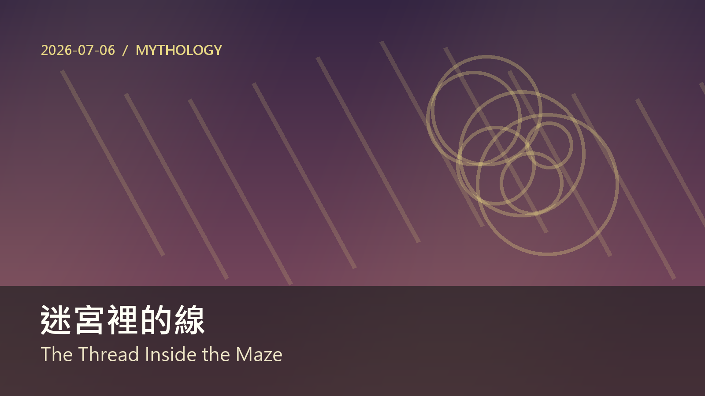

迷宮裡的線
間隔複習
- / 證據： .
- / 普通照片： .
- / 仔細比較： .
- / 並非保證： .
- / 拒絕稱它空無一物： .
文章
' . , , . , . , , .
阿里阿德涅之線的古老故事，從一個至今仍很現代的問題開始。 一位年輕英雄必須進入迷宮、面對怪物，然後再次找到出口。 力量也許能幫他在中心活下來，但只有力量無法解決迷宮的形狀。 為了這件事，他需要一條細線，由一位明白逃脫也是一種設計的人交給他。
, ' . , , . , . . . .
在許多版本的神話裡，阿里阿德涅被當成別人冒險中的助手。 她給出線，英雄成功，故事繼續往前。 但如果我們放慢速度，她的禮物就成了最有趣的部分。 她沒有和怪物戰鬥。 她沒有打破牆壁。 她讓回來成為可能，因此改變了迷宮的意義。
. , . , . , ? . , &; , .&;
迷宮可怕，是因為每一次選擇都會移除另一個選擇。 向左轉，右邊那條路就在身後消失。 走得夠久之後，記憶變得不可靠。 這個轉角靠近入口嗎，還是你十分鐘前在另一條通道看過？ 那條線把移動變成紀錄。 它說：「你可以探索，因為你有回去的路。 」
. . . . , .
我們在日常生活中也使用這樣的線。 清單是穿過忙碌早晨的一條線。 日記是穿過變動情緒的一條線。 密碼管理器是穿過帳號數位迷宮的一條線。 甚至和信任朋友的一場談話也可以是一條線，因為它幫助你在恐懼讓一切混亂後，回到自己真正的想法。
, . , , , . . .
現代生活讚美大膽決定，卻常忘記讓大膽變得安全的工具。 我們慶祝走進未知的人，而不是準備地圖、標記門、或讓燈繼續亮著的人。 阿里阿德涅提醒我們，支持並不比行動缺少智慧。 有時最聰明的人，是那個問大家要怎麼回家的人。
. , . : , , , . . , .
那條線也教我們一個溫柔的學習道理。 學英文時，你不需要在毫無幫助下衝進每一本困難的書。 你需要線：重複出現的單字、清楚例句、複習日，以及現實生活能用的句子。 這些工具不會讓旅程變得比較不勇敢。 它們讓勇敢可以重複，所以你明天能再次進入迷宮。
. , : . . . , .
也許這就是那條線的意象能流傳下來的原因。 它很簡單，幾乎太簡單：一隻手握著線，另一隻手摸著黑暗的牆。 但簡單的東西能承載很深的智慧。 目標不只是打敗中心的怪物。 目標是改變之後回來，帶著一個能在光裡被說出的故事。
' . . . . . , .
阿里阿德涅的線之所以有力量，是因為它謙遜。 它不承諾移除恐懼。 它不讓迷宮變小，也不讓怪物變溫柔。 它只是給英雄一段與入口的關係。 這段關係改變了一切。 能回來的人更自由地往前走，因為往前不再代表完全失去過去。
. . , , . , , . , .
寫作者很懂這件事。 長篇故事對創作者來說也會變成迷宮。 角色改變、場景增加，最初的想法被更好的想法埋住。 筆記、大綱和重複出現的意象就成了線。 它們幫助作者記得旅程為何開始，即使故事已長成更龐大、更奇異的東西。
. , . , . , . . , .
線也可以被分享。 在家庭裡，可能有一個人記得吃藥時間。 在團隊裡，可能有一個人保存專案歷史。 在友誼裡，可能有一個人溫柔提醒對方，在恐慌來臨前他們曾說自己想要什麼。 這些不是小工作。 它們是記憶工作，而記憶工作讓人不被當下困住。
, . . , . . , ?
然而，如果我們從不讓線放鬆，它也可能變成鎖鏈。 有些計畫一開始保護我們，後來卻阻止我們改變。 有些舊承諾引導我們，但另一些讓我們忠於一個已不存在的自己。 智慧意味著時不時檢查那條線。 它仍在幫我們回來，還是在阻止我們離開？
. . : , , , . , . , .
這讓神話比單純冒險更豐富。 它不只是關於面對危險的勇氣。 它也關於讓勇氣成為可能的隱藏系統：信任、記憶、準備與返回。 英雄也許得到掌聲，但線承載了教訓。 沒有人能獨自逃出迷宮，即使走在裡面的只有他一個人。
, . , &; .&; , &; .&; , , , , . , .
從某種角度看，那條線是獎盃的相反。 獎盃說：「我贏了。 」線說：「我保持連結。 」我們常展示獎盃，因為它們容易被欣賞；但線通常藏在抽屜、筆記本、行事曆和習慣裡。 它們不太發光，卻在有人看見之前，讓許多勇敢行動成為可能。
. . ' . . , .
學習者可以有意識地建立這樣的線。 你可以保留一小張真正想使用的片語清單。 你可以不帶羞愧地回到昨天的錯誤。 你可以標記一句感覺有生命的句子，並把它帶到明天。 這些行動看起來簡單，卻能把學習從隨機漫步變成有記憶的道路。
. , . , , , . . , , , . .
這則神話仍然有用，因為每個人的迷宮都不同。 對某個人來說，它是悲傷。 對另一個人來說，它是新工作、困難語言，或一個沒有完美答案的決定。 線的樣子也會不同。 它可能是一個人、一個固定流程、一個問題，或一句話。 重要的是，它幫你移動，同時不忘記如何回來。
, . . , . . . .
所以下次你面對迷宮時，不要只問自己有多強。 也問問自己能帶著哪條線。 問問誰曾經把線交給你，也問問你能暫時替誰握住線。 這則古老神話能留下來，是因為它理解勇氣裡某個溫柔的真相。 勇氣不是沒有恐懼，而是帶著能引你回來的連結走進去。
15 個重要單字
- /θred/・n.・線；線索
可指實體的線，也可比喻連結或線索。
.
那條線幫他找到回去的路。
- /meɪz/・n.・迷宮
由複雜通道組成，容易迷路的地方。
.
迷宮讓記憶變得不可靠。
- /ˈhɪroʊ/・n.・英雄
故事中面對困難的人物。
.
英雄需要的不只是力量。
- /sərˈvaɪv/・v.・存活
在危險或困難中活下來。
.
力量幫他存活下來。
- /ɪˈskeɪp/・n./v.・逃脫
離開危險或受困的地方。
.
逃脫也是一種設計。
- /mɪθ/・n.・神話
古老文化中的故事。
.
這則神話仍然感覺很現代。
- /ˌʌnrɪˈlaɪəbəl/・adj.・不可靠的
不能完全信任。
.
在迷宮裡記憶變得不可靠。
- /ˈrekərd/・n.・紀錄
留下可回頭查看的資料。
.
那條線把移動變成紀錄。
- /ˈtʃeklɪst/・n.・檢查清單
用來確認事情是否完成的列表。
.
清單能引導忙碌的早晨。
- /ˈtrʌstɪd/・adj.・可信任的
值得信賴的。
.
可信任的朋友能幫你想清楚。
- /boʊld/・adj.・大膽的
敢冒險或做強烈決定。
.
大膽決定需要安全工具。
- /ˌʌnˈnoʊn/・n./adj.・未知；未知的
還不知道或未探索的事物。
.
她帶著計畫走進未知。
- /səˈpɔːrt/・n./v.・支持
給予幫助或穩定力量。
.
支持也可以非常有智慧。
- /rɪˈpiːtəbəl/・adj.・可重複的
可以一次又一次做到。
.
好工具讓勇敢可以重複。
- /ˈwɪzdəm/・n.・智慧
深刻、成熟的理解。
.
簡單的東西也能承載智慧。
文法觀察
時間或地點開場
- 把時間、地點或情境放在句首，可以先建立畫面，再說主要動作。
- ' .
- , .
- 句首片語後面常用逗號，但不要因此把主詞省略掉。
/ 表達因果
- because 說原因，so 說結果；閱讀時先抓兩邊的邏輯關係。
- , , .
- .
- because 和 so 通常不要在同一個英文句子裡重複使用。
/ 製造轉折
- 用否定加轉折，可以修正讀者的預期，讓觀點更精準。
- , .
- , .
- but 後面要接完整、清楚的對比，不要只放一個模糊片語。
情態動詞 /
- may 表示可能，can 表示能力或可能性；兩者都能讓語氣保留彈性。
- , .
- .
- 情態動詞後面接原形動詞，不加 to。
自然句型拆解
, , .
這句自然是因為先給具體畫面，再讓讀者感覺情境。可替換主詞或地點，用來描述日常觀察。
, .
這句用連接詞把想法轉向，讀起來不像單句堆疊。日常寫作可用來解釋原因或修正誤解。
.
這句放在文章後段，通常帶有整理觀點的功能。可替換名詞與動詞，變成自己的心得句。
Collocations
-
做決定，常用於工作與生活選擇。
.
-
注意某事，比 listen 或 look 更抽象。
.
-
清楚目標，學習、管理、遊戲設計都常見。
.
-
需要時間，適合描述過程。
.
-
找到回去的方法，也可比喻恢復方向。
.
易混淆字
/
hear 是聲音進入耳朵，不一定主動；listen 是有意識地聽。
, .
/ /
look 是主動看，see 是看見結果，watch 是持續觀看變化。
.
翻譯練習
中翻英
- 這個故事提醒我們，迷宮裡的線 不只是表面上的主題。
- 好的工具能幫助人更仔細地思考。
- 真正的學習需要清楚目標和快速回饋。
- 普通的細節有時藏著重要意義。
- 我們不需要完美，但需要一條能回來的路。
英翻中
- .
- .
- .
- .
- .
參考答案
- .
- .
- .
- .
- , .
- 一個小細節能改變我們理解一個地方的方式。
- 最好的課常常感覺像發現。
- 耐心讓科學有足夠時間變成驚奇。
- 支持並不比行動缺少智慧。
- 選擇什麼值得你的注意力。
朗讀練習
, .
朗讀時先抓主要重音，逗號處短暫停頓，連音可放在功能字之間，例如 is to、but the。
.
朗讀時先抓主要重音，逗號處短暫停頓，連音可放在功能字之間，例如 is to、but the。
.
朗讀時先抓主要重音，逗號處短暫停頓，連音可放在功能字之間，例如 is to、but the。
.
朗讀時先抓主要重音，逗號處短暫停頓，連音可放在功能字之間，例如 is to、but the。
.
朗讀時先抓主要重音，逗號處短暫停頓，連音可放在功能字之間，例如 is to、but the。
今日總結
今天你讀了一篇關於 迷宮裡的線 的文章，練習從細節理解觀點，也複習目的、對比、回饋與自然表達。重點不是背完所有字，而是學會用英文看見關係與選擇。